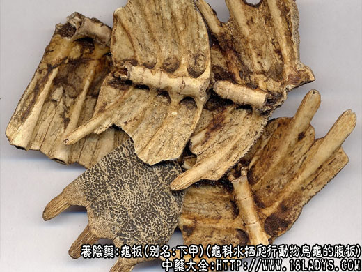
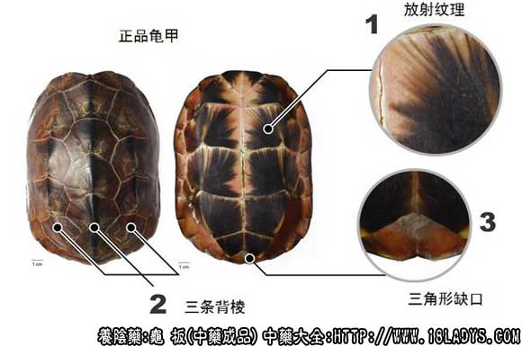

龟板为常用中药。始载《神农本草经》列为上品，原名“龟甲”。
别名：下甲、败龟板。
来源：为龟科水栖爬行动物乌龟的腹板（骨质鳞甲）。乌龟多群居，生活于江河湖泊中。
产地：主产于湖北、湖南、安徽、江苏、浙江，此外江西、广东、四川、福建等地亦有生产。
性状鉴别：腹板由6对对称的鳞甲（角板）帖附于骨板之上嵌合而成，呈板片状，长方椭圆形，一般长10～20厘米，宽7～10厘米，厚3～5毫米。前缘钝圆或平截；中间两则，因腹板横向延长上翘，与肋骨接合，呈耳状，后缘先端凹入，呈三角形缺刻。外表面鳞甲光滑，褐色至棕褐色，嵌入处黄白色，窄者如线，宽者如斑。内表面污黄白色或带有残留皮肉及血迹（血板）。与的表面鳞甲脱落露出黄白色骨板（汤板）。骨质坚硬，不易折断，由嵌入处折裂后呈密集的齿状。气微腥，味微咸。
以板片大，带血迹，鳞甲完整光滑者为佳。
主要成分：含动物胶质，脂肪、钙、磷。
药理作用：解热镇静、强健筋骨、凉血充血，可能与其所含钙质作用有关。
炮制：生用或炒黄醋淬酥。
性味：甘、咸、寒。
归经：入心、肝、肾经。
功能：滋阴潜阳，益肾强骨，养血补心，退虚热。
主治：肾阴不足，骨蒸劳热，腰膝痿弱，心虚健忘，遗精，崩漏带下，小儿脑门不合，久嗽，久痢，久疟等症。
临床应用：用作滋阴。凡血虚阴虚之证，尤其骨蒸劳热、遗精崩漏、慢性肾炎等均宜用。
1、治肺结核之骨蒸劳动日、盗汗、有解热作用，并能补充钙质和其他养分。接滋阴与降火相结合的原则，常配黄柏、知母、生地等清热药，方如大补阴丸。
2、治阴虚型慢性肾炎，对去尿蛋白似有一定帮助，可配阿胶和六味地黄汤。
3、治肾经衰弱，取龟板有镇静作用，常配酸枣仁、磁石、丹参、生地、柴胡等。
4、治慢性疮疡、久不愈合，配皂角刺、白头翁等，或配土茯苓熬胶，即龟苓胶。
此外，龟板能治血热所致的崩漏带下，取其有凉血止血的作用，又治小儿筋骨痿软，配虎骨，牛膝，锁阳等，方如虎潜丸。
使用注意：1、肾虚而无热者不宜用龟板；阳虚泄泻者亦不宜用。2、炙龟板一次服得太多（例如30g以上），有时会引起泄泻。
用量：9～30g（打碎先煎）。
处方举例：大补阴天丸（《丹溪心法》）（成药）：含黄柏、知母、龟板、熟地。每服6～9g，温开水送服。
注：
1、本品炮制前须要加工处理，过去多用水浸泡4～5周，使之腐烂至鳞甲脱，残肉掉、骨板由嵌合处断裂后，用清水洗净，晒干。
2、现北京采用埋腐法，将龟板埋于湿沙土中，至皮肉分离后，取出，洗净晒干。天津每50kg龟板加石灰10kg，碱面2kg，共放容器中加清水浸泡十天后，闯掉黑皮（鳞甲），洗至无臭，捞出轧破晒干。
3、关于龟甲的使用，按《本草纲目》的记载：“古代骨上下甲皆用之，至日华始用龟板，而后人遂主之矣。”现因用量日增，资源不足，有些地区又重新恢复使用龟壳，做到物尽其用。按龟壳龟板为一体之骨质物，其所含成分当无区别，不应再局限于习惯，或龟板为阴中之阴的说法之中，应推广使用。
4、关于龟板的加工方法，古代说法不一，李时珍在《本草纲目》中对败龟板的“败”字已提出异议...日败者，谓钻灼陈久如败也。看来并非败坏，水浸腐烂之法，各地沿用已久，但不知始自何时。按龟板乃滋阴之药，并非有毒之品，经过腐烂加工方法的既不卫生，又会使所含成分受到破坏而使疗效降低。现沙埋和石灰加碱液浸泡，虽有所改进，但仍有进一步探讨的必要：1、首先是对附鳞甲经加工之后均被除净，只余骨甲，按此鳞甲应与玳瑁的鳞甲功效类似（玳瑁只用鳞甲而不用骨甲，有解毒清热之功），不应废弃不用。2、习惯认为血板优于汤板，这也与加工方法有矛盾。据此建议有关单位试用清水闯洗干净，粉碎成细小块作饮片使用，既保持鳞甲不去，内在成分不受损失，又使有效成分易于煎出，以提高疗效。
附：龟板胶
龟板胶是用龟板熬炼提胶质浓缩而成的胶质块状物，褐色半透明，质坚硬，迂潮湿易软化。气腥，味微咸。
以质硬脆，半透明无臭味者为佳。
效用：与龟板相同，更优于龟板。
注：龟板胶（又名龟胶）由龟板熬胶而成。性味、功用与龟板同，滋阴之力更胜，配鹿角胶即为二仙胶，补虚劳不足，治遗精、盗汗、严重肾经衰弱。龟板胶用量3～9g，用酒溶化服下，或用其他汤药冲服。
用龟壳熬的胶，名龟甲胶，与龟板胶同用。